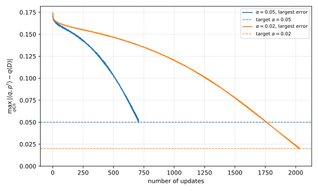

8 Private multiplicative weights
An analyst wants the answers to many statistical queries about a dataset, such as the fraction of records in each cell of a table. Independent noise on each answer makes the error grow polynomially with the number of queries. Under approximate differential privacy (DP), this chapter does much better. The number of records it needs grows only with the logarithm of the number of queries and of the size of the universe. The algorithm, private multiplicative weights, comes from online learning. It learns a distribution over the universe that agrees with the data on every query, and it reads the data only through a few private measurements.
8.1 Linear queries
Records take values in a set \(\mathcal X\), the universe, and a dataset is a list of \(n\) records. A linear query asks for the average of a bounded function over the records.
Definition 8.1 (Linear query) A linear query is a function \(q \colon \mathcal X \to [0,1]\) on the universe. On a dataset \(D \in \mathcal X^n\) with records \(x_1, \dots, x_n\) it takes the value
\[ q(D) = \frac1n \sum_{i=1}^n q(x_i). \tag{8.1}\]
A counting query is the special case where \(q\) takes only the values \(0\) and \(1\), and two families of counting queries come up often. In a histogram, there is one query \(q_s(x) = \mathbf 1[x = s]\) for each element \(s\) of the universe, so the answers are the fractions of records equal to each \(s\). In one-way marginals, the universe is \(\{0,1\}^d\), and the query \(q_j(x) = x_j\) for each coordinate \(j\) gives the fraction of records with feature \(j\) set to \(1\). This chapter allows any finite set of linear queries, however irregular.
The analyst wants every query in the set answered at once, so accuracy is the worst error over the set. A mechanism succeeds if, except with a small failure probability \(\beta\), no answer is off by more than a target error \(\alpha\).
Definition 8.2 (Query release) Let \(\mathcal Q\) be a finite set of linear queries, \(\alpha \in (0,1]\) a target error and \(\beta \in (0,1)\) a failure probability. A mechanism \(M \colon \mathcal X^n \to [0,1]^{\mathcal Q}\) outputs one answer \(M(D)_q\) for each query \(q \in \mathcal Q\). It answers \(\mathcal Q\) to accuracy \(\alpha\) with probability \(1-\beta\) if, for every dataset \(D\),
\[ \Pr\Big[\max_{q \in \mathcal Q} |M(D)_q - q(D)| \le \alpha\Big] \ge 1 - \beta . \tag{8.2}\]
The question is how large \(n\) must be for a private mechanism to do this. The sample sizes below are sufficient conditions, and smaller is better.
The first answer uses only earlier chapters. Changing one record changes a linear query by at most \(1/n\), so its sensitivity, the largest change over neighbouring datasets, is at most \(1/n\). The Laplace mechanism adds noise from the Laplace distribution \(\mathrm{Lap}(b)\) of scale \(b\), whose density at \(z\) is \(e^{-|z|/b}/(2b)\). It is \(\varepsilon\)-DP when \(b\) is the \(\ell_1\) sensitivity divided by \(\varepsilon\), and its tails are \(\Pr[|\mathrm{Lap}(b)| \ge tb] = e^{-t}\) for \(t \ge 0\). Independent Laplace noise on every query in \(\mathcal Q\), with the budget split evenly among them, gives the baseline that the rest of the chapter improves on.
Proposition 8.1 (Laplace baseline) Let \(\varepsilon > 0\) and \(\beta \in (0,1)\). Release \(M(D)_q = q(D) + Z_q\) for every \(q \in \mathcal Q\), with independent \(Z_q \sim \mathrm{Lap}(|\mathcal Q|/(\varepsilon n))\). This mechanism is \(\varepsilon\)-DP, and it answers \(\mathcal Q\) to accuracy \(\alpha\) with probability \(1-\beta\) whenever
\[ n \ge \frac{|\mathcal Q|\ln(|\mathcal Q|/\beta)}{\alpha\varepsilon} . \tag{8.3}\]
Proof.
- The vector \((q(D))_{q\in \mathcal Q}\) changes by at most \(1/n\) in each of its \(|\mathcal Q|\) coordinates when one record changes, so its \(\ell_1\) sensitivity is at most \(|\mathcal Q|/n\). The Laplace mechanism with scale \(|\mathcal Q|/(\varepsilon n)\) is therefore \(\varepsilon\)-DP.
- Write \(b = |\mathcal Q|/(\varepsilon n)\) and \(t = \ln(|\mathcal Q|/\beta)\). By the tail formula and a union bound over the \(|\mathcal Q|\) coordinates, \(\Pr[\max_q |Z_q| \ge tb] \le |\mathcal Q|e^{-t} = \beta\).
- The condition on \(n\) says exactly that \(tb \le \alpha\). So with probability at least \(1-\beta\), every error is below \(\alpha\).
Approximate DP does better, through the advanced composition theorem. That theorem implies that \(k\) mechanisms run in sequence, each \(\varepsilon_0\)-DP and each possibly chosen after seeing the earlier outputs, are together \((\varepsilon', \delta)\)-DP for every \(\delta \in (0,1)\), with
\[ \varepsilon' = \varepsilon_0\sqrt{2k\ln(1/\delta)} + k\varepsilon_0\left(e^{\varepsilon_0} - 1\right). \tag{8.4}\]
To use the theorem, one starts from a target budget \(\varepsilon\) and asks how much each of the \(k\) mechanisms may spend. The next lemma gives a per-mechanism budget \(\varepsilon_0\) that keeps \(\varepsilon'\) at most \(\varepsilon\). It is the budget-splitting corollary of that chapter, proved again here for the form Equation 8.4.
Lemma 8.1 (Splitting a budget) Let \(\varepsilon \in (0,1]\), \(\delta \in (0,1/2]\) and \(k \ge 1\). The adaptive composition of \(k\) mechanisms, each \(\varepsilon_0\)-DP with
\[ \varepsilon_0 = \frac{\varepsilon}{2\sqrt{2k\ln(1/\delta)}}, \tag{8.5}\]
is \((\varepsilon,\delta)\)-DP.
Proof.
- The first term of Equation 8.4 is \(\varepsilon_0\sqrt{2k\ln(1/\delta)} = \varepsilon/2\).
- Since \(\ln(1/\delta) \ge \ln 2\), \(\varepsilon \le 1\) and \(k\ge1\), we have \(\varepsilon_0 \le 1\). The function \(e^x\) is convex, so \(e^x - 1\) lies below the chord \((e-1)x \le 2x\) on \([0,1]\). Hence the second term is at most \(2k\varepsilon_0^2 = \varepsilon^2/(4\ln(1/\delta))\).
- That is at most \(\varepsilon/2\) because \(\varepsilon \le 1 \le 2\ln 2 \le 2\ln(1/\delta)\). Adding the two terms gives \(\varepsilon' \le \varepsilon\).
With one Laplace mechanism per query, so \(k = |\mathcal Q|\), the lemma lets each query spend a budget of order \(\varepsilon/\sqrt{|\mathcal Q|}\) instead of \(\varepsilon/|\mathcal Q|\). So the factor \(|\mathcal Q|\) in the baseline becomes \(\sqrt{|\mathcal Q|}\).
Proposition 8.2 (Laplace with advanced composition) Let \(\varepsilon \in (0,1]\), \(\delta \in (0,1/2]\) and \(\beta \in (0,1)\). Release \(M(D)_q = q(D) + Z_q\) with independent \(Z_q \sim \mathrm{Lap}(1/(\varepsilon_0 n))\), where \(\varepsilon_0 = \varepsilon/(2\sqrt{2|\mathcal Q|\ln(1/\delta)})\). This mechanism is \((\varepsilon,\delta)\)-DP, and it answers \(\mathcal Q\) to accuracy \(\alpha\) with probability \(1-\beta\) whenever
\[ n \ge \frac{2\sqrt{2|\mathcal Q|\ln(1/\delta)}\,\ln(|\mathcal Q|/\beta)}{\alpha\varepsilon} . \tag{8.6}\]
Proof.
- Each coordinate is the Laplace mechanism for a query of sensitivity \(1/n\), so it is \(\varepsilon_0\)-DP. Lemma 8.1 with \(k = |\mathcal Q|\) makes the whole release \((\varepsilon,\delta)\)-DP.
- As in Proposition 8.1, \(\Pr[\max_q|Z_q| \ge \ln(|\mathcal Q|/\beta)/(\varepsilon_0 n)] \le \beta\), and the condition on \(n\) says that \(\ln(|\mathcal Q|/\beta)/(\varepsilon_0 n) \le \alpha\).
The Gaussian mechanism with advanced composition does a little better, \(\sqrt{|\mathcal Q|\ln|\mathcal Q|\ln(1/\delta)}/(\alpha\varepsilon)\), because its lighter tails make the union bound cost \(\sqrt{\ln|\mathcal Q|}\) instead of \(\ln|\mathcal Q|\). These bounds are polynomial in \(|\mathcal Q|\), and in the worst case over query sets nothing better is possible. A smaller universe helps, though, as Table 8.1 shows, up to constants.
| Method | Privacy | Records needed, up to constants |
|---|---|---|
| Laplace, basic composition | \(\varepsilon\)-DP | \(\lvert \mathcal Q\rvert\ln\lvert \mathcal Q\rvert/(\alpha\varepsilon)\), improvable to \(\lvert \mathcal Q\rvert/(\alpha\varepsilon)\) |
| Gaussian, advanced composition | \((\varepsilon,\delta)\)-DP | \(\sqrt{\lvert \mathcal Q\rvert\ln\lvert \mathcal Q\rvert\ln(1/\delta)}/(\alpha\varepsilon)\) |
| Noisy histogram | \(\varepsilon\)-DP | \(\sqrt{\lvert\mathcal X\rvert\ln\lvert \mathcal Q\rvert}/(\alpha\varepsilon)\) |
| Exponential mechanism over small datasets | \(\varepsilon\)-DP | \(\ln\lvert \mathcal Q\rvert\ln\lvert\mathcal X\rvert/(\alpha^3\varepsilon)\), up to logarithmic factors |
| Private multiplicative weights | \((\varepsilon,\delta)\)-DP | \(\ln\lvert \mathcal Q\rvert\sqrt{\ln\lvert\mathcal X\rvert\ln(1/\delta)}/(\alpha^2\varepsilon)\), up to logarithmic factors |
The noisy histogram releases one noisy count per element of the universe and answers every query from it. So it pays polynomially in \(|\mathcal X|\), which is \(2^d\) for \(d\) binary features. The fourth row is logarithmic in both \(|\mathcal Q|\) and \(|\mathcal X|\), but its running time is \(|\mathcal X|^{O(\ln|\mathcal Q|/\alpha^2)}\). Private multiplicative weights keeps both logarithms and runs in time polynomial in \(|\mathcal Q|\), \(|\mathcal X|\) and \(n\). This one outputs synthetic data, and for such algorithms that is close to the best possible under standard cryptographic assumptions.
8.2 Learning from experts
Multiplicative weights is an algorithm for a game of repeated predictions, which has nothing to do with privacy. This section develops it from the simplest case.
A group of \(N\) experts makes predictions over \(T\) days. Each day, every expert predicts whether a stock goes up or down, and the algorithm sees these predictions before it makes its own. Then the true outcome is revealed, and a wrong prediction counts as a mistake. Suppose first that one expert, whose identity is unknown, is always right. Then the algorithm can stop listening to any expert as soon as it errs.
Proposition 8.3 (Halving) Predict with the majority of the experts that have never erred, breaking ties towards “down”, and discard every expert that errs. If some expert never errs, this algorithm makes at most \(\log_2 N\) mistakes.
Proof.
- Let \(S^t\) be the set of experts still kept on day \(t\), so \(|S^1| = N\).
- On a day with a mistake, the experts who predicted like the algorithm are wrong. They are at least half of \(S^t\), because the algorithm followed the majority. All of them are discarded, so \(|S^{t+1}| \le |S^t|/2\).
- The perfect expert is never discarded, so \(|S^t| \ge 1\) on every day. After \(M\) mistakes, \(1 \le N/2^M\), so \(M \le \log_2 N\).
The algorithm is measured against the best expert in hindsight. Its regret is its total loss minus the total loss of the best single expert. Here the best expert makes no mistakes, so the regret is at most \(\log_2 N\).
Now suppose instead that the best expert makes \(\mathrm{OPT}\) mistakes. Then halving fails, because the best expert may err on the first day and be discarded, after which the rest may all be wrong forever. The repair is to lower trust instead of removing it.
Proposition 8.4 (Weighted majority) Give each expert weight \(1\). Each day, predict with the side whose experts have the larger total weight, breaking ties towards “down”, and then halve the weight of every expert that erred. If the best expert makes \(\mathrm{OPT}\) mistakes, the algorithm makes \(M\) mistakes with
\[ M \le \frac{\mathrm{OPT} + \log_2 N}{\log_2(4/3)} \le 2.41\left(\mathrm{OPT} + \log_2 N\right). \tag{8.7}\]
Proof.
- Let \(W^t\) be the total weight at the start of day \(t\), so \(W^1 = N\). Weights never increase.
- Upper bound. On a day with a mistake, the side the algorithm followed carries at least half of \(W^t\), and all of its weight is halved. So \(W^{t+1} \le W^t - W^t/4 = \tfrac34 W^t\). Over \(T\) days, \(W^{T+1} \le N(3/4)^M\).
- Lower bound. The best expert’s weight is halved exactly \(\mathrm{OPT}\) times, so \(W^{T+1} \ge (1/2)^{\mathrm{OPT}}\).
- Combining the bounds gives \((4/3)^M \le N\,2^{\mathrm{OPT}}\). Taking \(\log_2\) of both sides gives the first inequality, and \(1/\log_2(4/3) = 2.409\ldots\) gives the second.
The guarantee is competitive with the best expert, but its regret, \(1.41\,\mathrm{OPT} + 2.41\log_2 N\), grows with \(\mathrm{OPT}\). A randomized algorithm with gentler updates removes the factor in front of \(\mathrm{OPT}\).
The general game has losses instead of mistakes. In each of \(T\) rounds, every expert \(i\) suffers a loss \(\ell^t_i \in [-1,1]\), chosen by an adversary, and a negative loss is a gain. A randomized algorithm picks one expert and suffers the loss of that expert. It is cleaner to let the algorithm pick a distribution \(p^t\) over the experts and suffer the average loss \(\ell^t \cdot p^t = \sum_i p^t_i \ell^t_i\). Multiplicative weights keeps one weight per expert and plays the distribution proportional to the weights. After each round it multiplies each weight by a factor that falls as the loss of that expert rises.
Definition 8.3 (Multiplicative weights) Fix a learning rate \(\eta \in (0, 1/2]\). Start with weights \(w^1_i = 1\) for \(i = 1, \dots, N\). In round \(t = 1, 2, \dots\):
- Play the distribution \(p^t_i = w^t_i / W^t\), where \(W^t = \sum_{i=1}^N w^t_i\).
- Observe the loss vector \(\ell^t \in [-1,1]^N\), which may depend on \(p^1, \dots, p^t\), and suffer \(\ell^t\cdot p^t\).
- Update \(w^{t+1}_i = w^t_i\,(1 - \eta\ell^t_i)\) for every \(i\).
The factor \(1 - \eta\ell^t_i\) lies in \([1/2, 3/2]\), so the weights stay positive, and an expert with a positive loss loses weight while one with a negative loss gains it. The analysis takes the logarithm of the total weight, which turns the products of factors \(1 - \eta\ell^t_i\) into sums of \(\ln(1 - \eta\ell^t_i)\). So it needs two bounds on that logarithm, one from above and one from below.
Lemma 8.2 For every \(x < 1\), \(\ln(1-x) \le -x\). For every \(x \in [-1/2, 1/2]\), \(\ln(1-x) \ge -x - x^2\).
Proof.
- The function \(\ln(1-x)\) is concave, so it lies below its tangent line at \(0\), which is \(-x\).
- Let \(h(x) = \ln(1-x) + x + x^2\). Then \(h(0) = 0\) and \(h'(x) = -\frac{1}{1-x} + 1 + 2x = \frac{x(1-2x)}{1-x}\).
- On \([0,1/2]\), \(h' \ge 0\), so \(h(x) \ge h(0) = 0\). On \([-1/2,0]\), \(h' \le 0\), so \(h\) decreases to \(h(0) = 0\) and is non-negative there too.
The main result compares the total loss of multiplicative weights with the total loss of any fixed distribution \(p\) chosen in hindsight. The difference is the regret, and the theorem bounds it by a term that grows with \(\eta\) and a term that shrinks with it.
Theorem 8.1 (Regret of multiplicative weights) Let \(p^1, p^2, \dots\) be the distributions that multiplicative weights plays. For every learning rate \(\eta \in (0,1/2]\), every number of rounds \(T \ge 1\), every sequence of loss vectors \(\ell^1, \dots, \ell^T\) in \([-1,1]^N\) and every fixed distribution \(p\) over the experts,
\[ \sum_{t=1}^T \ell^t\cdot p^t \le \sum_{t=1}^T \ell^t\cdot p + \eta T + \frac{\ln N}{\eta}. \tag{8.8}\]
If \(N \ge 2\), \(T \ge 4\ln N\) and \(\eta = \sqrt{\ln N / T}\), the last two terms add up to \(2\sqrt{T\ln N}\).
Proof.
- Upper bound on the total weight. By the update rule and \(p^t_i = w^t_i/W^t\),
\[ W^{t+1} = \sum_{i=1}^N w^t_i(1 - \eta\ell^t_i) = W^t\left(1 - \eta\,\ell^t\cdot p^t\right). \tag{8.9}\]
Unrolling from \(W^1 = N\) and applying the first bound of Lemma 8.2 to each factor,
\[ \ln W^{T+1} = \ln N + \sum_{t=1}^T \ln\left(1 - \eta\,\ell^t\cdot p^t\right) \le \ln N - \eta\sum_{t=1}^T \ell^t\cdot p^t . \tag{8.10}\]
- Lower bound through one expert. The total weight is at least the weight of any expert \(i\). Each \(\eta\ell^t_i\) lies in \([-1/2,1/2]\), so the second bound of Lemma 8.2 applies, and \((\ell^t_i)^2 \le 1\):
\[ \ln W^{T+1} \ge \ln w^{T+1}_i = \sum_{t=1}^T \ln(1-\eta\ell^t_i) \ge -\eta\sum_{t=1}^T \ell^t_i - \eta^2 T . \tag{8.11}\]
- Lower bound through a distribution. Multiply the inequality of step 2 by \(p_i\) and sum over \(i\). The weights \(p_i\) sum to \(1\), so \(\ln W^{T+1} \ge -\eta\sum_t \ell^t\cdot p - \eta^2T\).
- Combining steps 1 and 3 gives \(-\eta\sum_t \ell^t\cdot p - \eta^2 T \le \ln N - \eta\sum_t \ell^t\cdot p^t\). Dividing by \(\eta\) and rearranging gives Equation 8.8.
- With \(\eta = \sqrt{\ln N/T}\), both \(\eta T\) and \(\ln N/\eta\) equal \(\sqrt{T\ln N}\). The condition \(N \ge 2\) makes \(\eta > 0\), and \(T \ge 4\ln N\) makes \(\eta \le 1/2\).
The regret is of order \(\sqrt T\), while the losses themselves can add up to order \(T\). So on average over rounds the algorithm does as well as the best fixed distribution, up to a term that vanishes as \(\sqrt{\ln N/T}\). With \(p\) a point mass, the distribution that puts all its weight on one expert, the theorem covers the randomized algorithm that picks one expert.
Corollary 8.1 Let \(N \ge 2\). Fix losses \(\ell^1, \dots, \ell^T \in [-1,1]^N\) in advance, with \(T \ge 4\ln N\), and let \(L_i = \sum_t \ell^t_i\). Pick expert \(i_t\) with probability \(p^t_{i_t}\), where \(p^t\) comes from Definition 8.3 with \(\eta = \sqrt{\ln N/T}\). Then
\[ \mathbb E\Big[\sum_{t=1}^T \ell^t_{i_t}\Big] \le \min_i L_i + 2\sqrt{T\ln N}. \tag{8.12}\]
Proof. The losses are fixed, so each \(p^t\) is fixed too, and \(\mathbb E[\ell^t_{i_t}] = \ell^t\cdot p^t\). Sum over \(t\) and apply Theorem 8.1 with \(p\) the point mass on the best expert.
8.3 Multiplicative weights for queries
To use the game for query release, the experts become the elements of the universe, and the distribution \(p^t\) becomes a candidate dataset. To compare a candidate with the true dataset, we also write the true dataset as a distribution over the universe.
Definition 8.4 (Histogram of a dataset) The histogram of \(D \in \mathcal X^n\) is the distribution \(p_D\) on \(\mathcal X\) with \(p_D(x) = |\{i : x_i = x\}|/n\), the fraction of records equal to \(x\). For a linear query \(q\) and a distribution \(p\) on \(\mathcal X\), write \(\langle q, p\rangle = \sum_{x\in\mathcal X} q(x)p(x)\).
Grouping the records by value gives \(q(D) = \langle q, p_D\rangle\). So answering the queries means finding a distribution \(\hat p\) with \(\langle q, \hat p\rangle\) close to \(\langle q, p_D\rangle\) for every \(q \in \mathcal Q\).
Picture a game in rounds. An adversary picks a query \(q^t \in \mathcal Q\) after the algorithm commits to a distribution \(p^t\), and the algorithm pays its error \(|\langle q^t,p^t\rangle - \langle q^t,p_D\rangle|\). This looks pointless, since the algorithm could play \(p^t = p_D\) from the start. But that move reads the whole dataset, while multiplicative weights reads it only through one query per round and the sign of its error, which are cheap to privatize. And a bound on the total error turns into a bound on the number of rounds with a large error, as shown below.
The loss vector comes from the error itself. Write the error as a function of the candidate, \(f(p') = |\langle q^t, p'\rangle - \langle q^t, p_D\rangle|\). This function is convex, and \(f(p_D) = 0\). Where the error is not zero, its gradient at \(p^t\) is \(s_t q^t\), where \(s_t\) is the sign of \(\langle q^t, p^t - p_D\rangle\), taken as \(+1\) at \(0\). So the loss vector to feed the experts is \(\ell^t = s_t q^t\), and the next lemma shows that it measures the error exactly.
Lemma 8.3 Let \(q\) be a linear query, \(p'\) and \(p\) distributions on \(\mathcal X\), and \(s\) the sign of \(\langle q, p' - p\rangle\), with \(s = +1\) if it is \(0\). The vector \(\ell = s q\) lies in \([-1,1]^{\mathcal X}\), and
\[ \ell\cdot(p' - p) = |\langle q, p'\rangle - \langle q, p\rangle| . \tag{8.13}\]
Proof. The entries of \(q\) lie in \([0,1]\), so those of \(sq\) lie in \([-1,1]\). By linearity, \(\ell\cdot(p'-p) = s\langle q, p'-p\rangle\), which is the absolute value of \(\langle q, p'-p\rangle\) by the choice of \(s\).
With these losses, the regret of multiplicative weights against the fixed distribution \(p_D\) is exactly the total error of the candidates. So the regret bound also bounds that total.
Theorem 8.2 Run multiplicative weights over the experts \(\mathcal X\) with learning rate \(\eta \in (0,1/2]\), and let \(p^t\) be the distribution it plays in round \(t\). Feed it the losses \(\ell^t = s_tq^t\), where \(q^1, q^2, \dots\) are any queries in \(\mathcal Q\) and \(s_t\) is the sign of \(\langle q^t, p^t - p_D\rangle\). After any number \(U\) of rounds,
\[ \sum_{t=1}^U |\langle q^t,p^t\rangle - q^t(D)| \le \eta U + \frac{\ln|\mathcal X|}{\eta} . \tag{8.14}\]
With \(|\mathcal X| \ge 2\), \(U \ge 4\ln|\mathcal X|\) and \(\eta = \sqrt{\ln|\mathcal X|/U}\), the right-hand side is \(2\sqrt{U\ln|\mathcal X|}\).
Proof. By Lemma 8.3, the left-hand side equals \(\sum_t \ell^t\cdot p^t - \sum_t\ell^t\cdot p_D\). Apply Theorem 8.1 with \(N = |\mathcal X|\) and the fixed distribution \(p = p_D\).
This bounds a total, while the goal is one distribution that is accurate on every query. Call round \(t\) a mistake if the error there exceeds \(\alpha\). If the adversary always picks a query on which the current distribution makes a mistake, the total grows by more than \(\alpha\) per round, while the regret bound grows only by \(\eta\) per round. So the mistakes cannot go on for long. To use this, the algorithm plays the adversary against itself and always chooses the hardest query it can find.
Definition 8.5 (Multiplicative weights for queries) Given \(D\), \(\mathcal Q\) and \(\alpha \in (0,1]\), set \(\eta = \alpha/2\) and let \(p^1\) be uniform on \(\mathcal X\). In round \(t = 1, 2, \dots\):
- If \(|\langle q, p^t\rangle - q(D)| \le \alpha\) for every \(q \in \mathcal Q\), output \(p^t\) and stop.
- Otherwise pick \(q^t \in \mathcal Q\) with \(|\langle q^t, p^t\rangle - q^t(D)| > \alpha\), and let \(s_t\) be the sign of \(\langle q^t, p^t\rangle - q^t(D)\).
- Update \(p^{t+1}(x) \propto p^t(x)\left(1 - \eta s_tq^t(x)\right)\).
In step 3, the symbol \(\propto\) means that the right-hand side is divided by its sum over \(x\), so that \(p^{t+1}\) is again a distribution. Every update adds more than \(\alpha\) to the total error, while the bound on that total grows by only \(\eta = \alpha/2\) per round. So the updates must stop soon.
Corollary 8.2 (Mistake bound) Let \(|\mathcal X| \ge 2\). The algorithm of Definition 8.5 stops after fewer than \(4\ln|\mathcal X|/\alpha^2\) updates, and its output \(\hat p\) satisfies \(|\langle q,\hat p\rangle - q(D)| \le \alpha\) for every \(q \in \mathcal Q\).
Proof.
- The algorithm is multiplicative weights with \(\eta = \alpha/2 \le 1/2\) and the losses of Theorem 8.2, since normalizing the weights gives the update in step 3.
- Suppose it makes \(U\) updates. Each of them has error above \(\alpha\), so by Theorem 8.2
\[ \alpha U < \frac{\alpha}{2}U + \frac{2\ln|\mathcal X|}{\alpha}, \qquad\text{that is,}\qquad U < \frac{4\ln|\mathcal X|}{\alpha^2}. \tag{8.15}\]
- So the algorithm stops, which happens only at step 1, where every query is within \(\alpha\).
The bound is a worst case, and Figure 8.1 runs the algorithm on a small example where the number of updates stays far below it.

8.4 Private multiplicative weights
The algorithm of Definition 8.5 reads the data in two places: it picks a query with a large error, and it reads the sign of that error. Both have private versions. The exponential mechanism picks a query with nearly the largest error, and the Laplace mechanism can measure the error itself, which has sensitivity \(1/n\).
The exponential mechanism takes a finite set \(\mathcal R\) of candidates and a score \(u(D, r)\) whose sensitivity in \(D\) is at most \(\Delta\) for each \(r\). It outputs \(r\) with probability proportional to \(\exp(\varepsilon u(D,r)/(2\Delta))\). It is \(\varepsilon\)-DP, and for every \(t \ge 0\),
\[ \Pr\Big[u(D,\hat r) \le \max_{r\in \mathcal R} u(D,r) - \frac{2\Delta}{\varepsilon}\big(\ln|\mathcal R| + t\big)\Big] \le e^{-t}, \tag{8.16}\]
where \(\hat r\) is its output.
The private algorithm replaces the two steps of Definition 8.5 that read the data by these two mechanisms. It also fixes the number of rounds \(T\) in advance, so that the privacy budget can be split among them.
Definition 8.6 (Private multiplicative weights) The inputs are a dataset \(D\in\mathcal X^n\), a finite set \(\mathcal Q\) of linear queries, an accuracy \(\alpha \in (0,1]\) and privacy parameters \(\varepsilon\in(0,1]\) and \(\delta \in (0,1/2]\). Set
\[ T = \left\lceil \frac{64\ln|\mathcal X|}{\alpha^2}\right\rceil, \qquad \eta = \frac\alpha8, \qquad \varepsilon_0 = \frac{\varepsilon}{4\sqrt{T\ln(1/\delta)}}, \tag{8.17}\]
and let \(p^1\) be uniform on \(\mathcal X\). In round \(t = 1, \dots, T\):
- Choose \(q^t \in \mathcal Q\) with the exponential mechanism, with privacy parameter \(\varepsilon_0\) and score \(u_t(D,q) = |\langle q, p^t\rangle - q(D)|\), whose sensitivity is \(1/n\).
- Measure \(y_t = \langle q^t, p^t\rangle - q^t(D) + Z_t\), with \(Z_t \sim \mathrm{Lap}(1/(\varepsilon_0 n))\).
- If \(|y_t| \le \alpha/2\), output \(p^t\) and stop.
- Otherwise let \(s_t\) be the sign of \(y_t\) and update \(p^{t+1}(x) \propto p^t(x)\left(1 - \eta s_t q^t(x)\right)\).
If no round stops, output \(p^{T+1}\).
The score \(u_t\) has sensitivity \(1/n\) because \(\langle q, p^t\rangle\) does not depend on \(D\), and \(q(D)\) changes by at most \(1/n\). The threshold \(\alpha/2\) in step 3 sits between the errors that must cause an update and those small enough to stop on. It leaves room on both sides for the noise. Every access to the data goes through one of the two mechanisms, so privacy follows from composing them over the \(T\) rounds.
Theorem 8.3 Private multiplicative weights is \((\varepsilon,\delta)\)-DP.
Proof.
- In round \(t\), the distribution \(p^t\) is a function of the earlier outputs \(q^1, y_1, \dots, q^{t-1}, y_{t-1}\) alone. So each round runs two mechanisms chosen from earlier outputs: the exponential mechanism, which is \(\varepsilon_0\)-DP, and the Laplace mechanism on a query of sensitivity \(1/n\) with scale \(1/(\varepsilon_0n)\), which is also \(\varepsilon_0\)-DP.
- A round after the algorithm stops can be treated as a mechanism with a fixed output, which is \(0\)-DP. So the transcript of all \(T\) rounds is an adaptive composition of \(k = 2T\) mechanisms, each \(\varepsilon_0\)-DP.
- The value \(\varepsilon_0 = \varepsilon/(4\sqrt{T\ln(1/\delta)})\) equals \(\varepsilon/(2\sqrt{2k\ln(1/\delta)})\) for \(k = 2T\). Lemma 8.1 makes the transcript \((\varepsilon,\delta)\)-DP.
- The output is a function of the transcript, so it is \((\varepsilon,\delta)\)-DP by post-processing.
Basic composition would also work, and it would even give pure DP, but only with \(\varepsilon_0 = \varepsilon/(2T)\). Then the condition on \(n\) in the next theorem would grow like \(T\) instead of \(\sqrt T\), which means \(1/\alpha^3\) instead of \(1/\alpha^2\).
Accuracy needs enough records for the errors of both mechanisms to stay below \(\alpha/4\) in every round. Then each update still makes progress, and the algorithm stops on a distribution that is accurate on every query.
Theorem 8.4 (Accuracy of private multiplicative weights) Let \(|\mathcal X| \ge 2\) and \(\beta \in (0,1)\), and let the other parameters be as in Definition 8.6. If
\[ n \ge \frac{32\sqrt{T\ln(1/\delta)}\,\big(\ln|\mathcal Q| + \ln(2T/\beta)\big)}{\alpha\varepsilon}, \tag{8.18}\]
then with probability at least \(1-\beta\) the output \(\hat p\) satisfies \(|\langle q, \hat p\rangle - q(D)| \le \alpha\) for every \(q\in \mathcal Q\).
Proof.
- The good event. Let \(G\) be the event that in every round \(t\) that runs, the chosen query has \(u_t(D,q^t) \ge \max_q u_t(D,q) - \alpha/4\) and the noise has \(|Z_t| < \alpha/4\). Condition Equation 8.18 is the same as \(\frac{2}{n\varepsilon_0}(\ln|\mathcal Q| + \ln(2T/\beta)) \le \frac\alpha4\), by the value of \(\varepsilon_0\). So Equation 8.16 with \(t = \ln(2T/\beta)\) bounds the first failure in each round by \(\beta/(2T)\). The same condition gives \(\ln(2T/\beta)/(\varepsilon_0n) \le \alpha/4\), so the Laplace tail bounds the second failure by \(\beta/(2T)\). A union bound over the two failures and the \(T\) rounds gives \(\Pr[G] \ge 1-\beta\). The rest of the proof assumes \(G\).
- Every update makes progress. In a round that updates, \(|y_t| > \alpha/2 > |Z_t|\). So the true error \(\langle q^t,p^t\rangle - q^t(D) = y_t - Z_t\) has the sign \(s_t\) of \(y_t\), and its absolute value exceeds \(\alpha/2 - \alpha/4 = \alpha/4\).
- Few updates. By step 2, the update is the one of Theorem 8.2, with \(\eta = \alpha/8 \le 1/2\). If \(U\) rounds update, each has error above \(\alpha/4\), and the theorem gives
\[ \frac\alpha4 U < \frac\alpha8 U + \frac{8\ln|\mathcal X|}{\alpha}, \qquad\text{that is,}\qquad U < \frac{64\ln|\mathcal X|}{\alpha^2} \le T . \tag{8.19}\]
So the \(T\) rounds cannot all update, and the algorithm stops at step 3 in some round \(t\). 4. The output is accurate. In that round, \(|y_t|\le\alpha/2\) and \(|Z_t| < \alpha/4\), so \(u_t(D,q^t) < 3\alpha/4\). On \(G\), every query then has \(u_t(D,q) \le u_t(D,q^t) + \alpha/4 < \alpha\), and the output is \(\hat p = p^t\).
Since \(\ln|\mathcal X|/\alpha^2 \ge \ln 2 > 1/2\), rounding up adds less than \(2\ln|\mathcal X|/\alpha^2\) and \(T \le 66\ln|\mathcal X|/\alpha^2\). So condition Equation 8.18 asks for
\[ n = O\!\left(\frac{\sqrt{\ln|\mathcal X|\,\ln(1/\delta)}\,\big(\ln|\mathcal Q| + \ln\frac{\ln|\mathcal X|}{\alpha\beta}\big)}{\alpha^2\varepsilon}\right) \tag{8.20}\]
records, which is the last row of Table 8.1. It is logarithmic in both \(|\mathcal Q|\) and \(|\mathcal X|\), and the price is a worse dependence on \(\alpha\), \(1/\alpha^2\) instead of \(1/\alpha\). Each round evaluates every query on \(p^t\) and on \(D\), so the running time is \(O\big(T|\mathcal Q|(|\mathcal X| + n)\big)\), linear in \(|\mathcal X|\).
The output is a distribution \(\hat p\) over the universe, a synthetic dataset that agrees with the original on every query in \(\mathcal Q\) and that an analyst can use like the original. The logarithms pay off only when the number of queries is large, as a comparison of the three sufficient sample sizes shows.
Example 8.1 Take records with \(d = 20\) binary features, so \(|\mathcal X| = 2^{20}\), and \(\alpha = 0.05\), \(\varepsilon = 1\), \(\delta = 10^{-6}\), \(\beta = 0.05\). Private multiplicative weights runs for at most \(T = 354{,}892\) rounds. For \(|\mathcal Q| = 10^6\) queries, the sufficient sample sizes of Proposition 8.1, Proposition 8.2 and Theorem 8.4 are about \(3.4\times10^8\), \(3.5\times10^6\) and \(4.3\times10^7\) records. For \(|\mathcal Q| = 10^9\) they become \(4.7\times10^{11}\), \(1.6\times10^8\) and \(5.3\times10^7\). Private multiplicative weights wins only for very many queries, because the constants in Equation 8.18 are large and its accuracy costs \(1/\alpha^2\).
8.5 Summary
| Result | Statement |
|---|---|
| Proposition 8.1 | Laplace noise on every query: \(n \ge \lvert \mathcal Q\rvert\ln(\lvert \mathcal Q\rvert/\beta)/(\alpha\varepsilon)\) under \(\varepsilon\)-DP |
| Lemma 8.1 | \(k\) mechanisms at \(\varepsilon/(2\sqrt{2k\ln(1/\delta)})\) each compose to \((\varepsilon,\delta)\)-DP |
| Proposition 8.2 | Laplace with advanced composition: \(n \ge 2\sqrt{2\lvert \mathcal Q\rvert\ln(1/\delta)}\ln(\lvert \mathcal Q\rvert/\beta)/(\alpha\varepsilon)\) |
| Proposition 8.3 | with a perfect expert, halving makes at most \(\log_2 N\) mistakes |
| Proposition 8.4 | weighted majority makes at most \(2.41(\mathrm{OPT} + \log_2 N)\) mistakes |
| Theorem 8.1 | multiplicative weights has regret \(\eta T + \ln N/\eta\), or \(2\sqrt{T\ln N}\) |
| Theorem 8.2 | with losses \(s_tq^t\), the total query error is at most \(2\sqrt{U\ln\lvert\mathcal X\rvert}\) |
| Corollary 8.2 | fewer than \(4\ln\lvert\mathcal X\rvert/\alpha^2\) updates, then every query is within \(\alpha\) |
| Theorem 8.3 | private multiplicative weights is \((\varepsilon,\delta)\)-DP |
| Theorem 8.4 | accuracy \(\alpha\) from \(n = O(\sqrt{\log\lvert\mathcal X\rvert\log(1/\delta)}\log\lvert \mathcal Q\rvert/(\alpha^2\varepsilon))\) records, up to lower-order logarithmic terms |
8.6 References
- Moritz Hardt and Guy N. Rothblum, “A Multiplicative Weights Mechanism for Privacy-Preserving Data Analysis”, 2010. Private multiplicative weights and its sample-size bound.
- Anupam Gupta, Aaron Roth and Jonathan Ullman, “Iterative Constructions and Private Data Release”, 2012, and Moritz Hardt, Katrina Ligett and Frank McSherry, “A Simple and Practical Algorithm for Differentially Private Data Release”, 2012. The offline version used here, with queries selected by the exponential mechanism, and a practical variant.
- Avrim Blum, Katrina Ligett and Aaron Roth, “A Learning Theory Approach to Noninteractive Database Privacy”, 2008 (journal version 2013). The exponential mechanism over small datasets, the fourth row of Table 8.1.
- Nick Littlestone and Manfred K. Warmuth, “The Weighted Majority Algorithm”, 1994. Halving and weighted majority.
- Sanjeev Arora, Elad Hazan and Satyen Kale, “The Multiplicative Weights Update Method: A Meta-Algorithm and Applications”, 2012. A survey of the algorithm and its regret bound, Theorem 8.1.
- Thomas Steinke and Jonathan Ullman, “Between Pure and Approximate Differential Privacy”, 2017. The bound \(|\mathcal Q|/(\alpha\varepsilon)\) for pure DP in the first row of Table 8.1, stated for one-way marginals.
- Salil Vadhan, “The Complexity of Differential Privacy”, 2017. Theorem 2.9 there is the noisy-histogram bound, stated for counting queries.
- Jonathan Ullman and Salil Vadhan, “[Probabilistically Checkable Proofs] and the Hardness of Generating Private Synthetic Data” (the title abbreviates the bracketed words), 2011. Why no private algorithm that outputs synthetic data can be much faster in general.